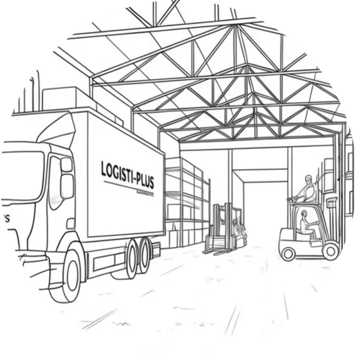
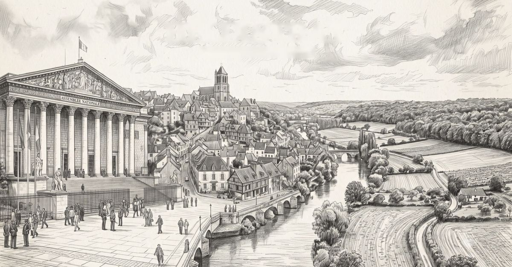
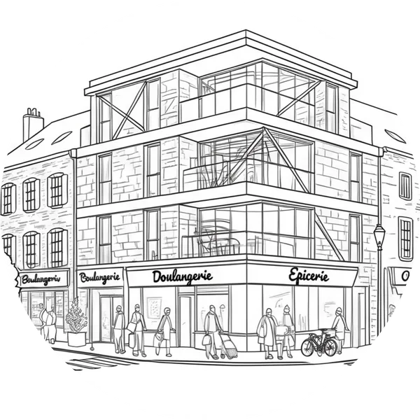
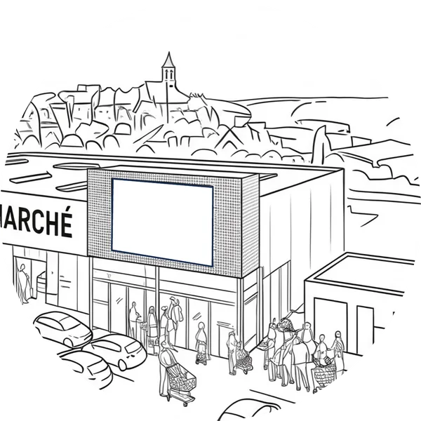
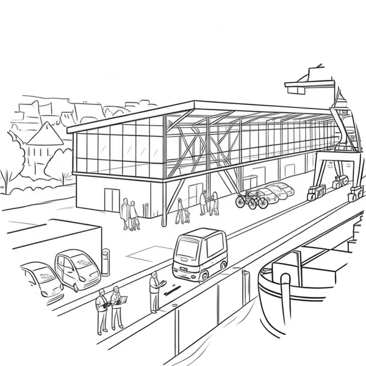

Qu'est-ce que tu vois ici ? Une friche ? Regarde bien. Tu ne vois pas ? C'est notre prochaine plateforme logistique.

Diplomatie territoriale
Notre objectif
Pour accomplir cette tâche, notre accompagnement de terrain vise à favoriser le dialogue et l'ancrage local. Notre approche en diplomatie territoriale remplit ainsi 5 missions :
Représentation d'intérêts et négociation
Observation et analyse
Intégration des parties prenantes, désamorçage des risques politiques et sociaux
Gestion de crise
Rayonnement culturel et économique
Un diplomate doit savoir parler plusieurs langues pour être sûr d'être bien compris.
Nous parlons le langage des élus, des techniciens des collectivités, des acteurs économiques, associatifs et des citoyens.
Le diplomate doit aussi maîtriser le cadre réglementaire et juridique dans lequel s'inscrivent les projets afin de mettre de l'huile dans les rouages administratifs à toutes les étapes.
Est-ce adapté au secteur public ou au secteur privé ? Dans quels domaines ?
La réponse dans ces quatre récits.

Qu'est-ce que tu vois ici ? Une friche ? Regarde bien. Tu ne vois pas ? C'est notre prochaine plateforme logistique.

Félicitations à toute l'équipe ! Ce soir, ce n'est pas un candidat qui a gagné, c'est un projet municipal de dynamisme citoyen et économique.

Je ne sais pas pour les autres franchisés, mais nous en ce moment on voit bien que le contexte global pèse sur les consommateurs.

On a bientôt le conseil d'administration de l'EPIC, on doit s'assurer que tout le monde ait bien compris.
Qu'est-ce que tu vois ici ? Une friche ? Regarde bien. Tu ne vois pas ? C'est notre prochaine plateforme logistique.
Mais attention, pas une de plus, pas une parmi d'autres. Cette « friche » comme tu dis, ce sera demain notre vaisseau amiral, la preuve de notre savoir-faire et de notre capacité à nous inscrire dans le futur : bâtiments autonomes en énergie, flux gérés par des agents conversationnels, bornes de recharge rapide pour nos futurs camions électriques… J'ai une première esquisse avec mes archis et mes partenaires pour les bornes, mais je dois encore voir RTE pour le raccordement électrique et rencontrer les élus. Il paraît qu'il y a des pavillons pas loin et que certains au conseil municipal verraient d'un mauvais œil l'arrivée de nos camions en trois-huit. Avant de nous lancer on a besoin de savoir où on met les pieds, la zone est idéale mais si c'est pour enchaîner les recours et que le projet sorte dans 15 ans c'est pas la peine !
Félicitations à toute l'équipe ! Ce soir, ce n'est pas un candidat qui a gagné, c'est un projet municipal de dynamisme citoyen et économique.
Nous ne sommes pas juste un satellite, une banlieue dortoir. Ça fait maintenant 3 mandats que je me bats pour que notre ville conserve ses services et pour que nos habitants continuent à tisser du lien. Il y a eu des avancées mais force est de constater qu'il reste beaucoup à faire pour faire en sorte que chacun sorte de chez soi, s'engage dans la vie locale, et pour que nos commerces soient préservés. On n'a pas le choix : il faut attirer plus d'habitants et on ne peut plus s'étendre avec la loi ZAN. Vous le savez, ça fait 7 ans que je me bats avec l'administration pour que notre projet du Cèdre voie le jour. La SNCF est partante, un promoteur a été choisi et le programme nous permettrait même en plus des logements d'avoir notre crèche municipale. L'enquête publique a été annoncée avant les élections et je sais que certains n'y sont pas favorables et s'organisent.
Je ne sais pas pour les autres franchisés, mais nous en ce moment on voit bien que le contexte global pèse sur les consommateurs.
Comme vous j'ai mis en place un drive, mais avec un e-commerce de plus en plus agressif sur les prix et qui se met à parler de livrer par drone… on doit se réinventer et repenser notre modèle. Une piste intéressante c'est l'optimisation de nos fonciers, je sais que certains d'entre nous font déjà des ombrières solaires, moi je suis en discussion avec une entreprise qui fait du mini data center pour lui louer de la surface. Et en parlant de foncier, j'ai appris récemment que le maire est en train de réfléchir à faire évoluer l'entrée de ville, là où se trouve mon magasin. Ce sont des bruits de couloirs mais je n'ai pas été consultée directement. Je pense qu'il y a un vrai enjeu à intégrer ces discussions et à jouer un rôle dans la vie locale, sans quoi l'évolution des entrées de ville et de nos zones commerciales va nous échapper.
On a bientôt le conseil d'administration de l'EPIC, on doit s'assurer que tout le monde ait bien compris.
Si nous voulons développer le transport fluvial nous n'avons pas non plus des centaines de possibilités : le quai de déchargement doit être positionné à proximité de la nationale pour que les camions puissent rejoindre l'autoroute le plus vite possible. Maintenant que le projet a été partagé, que nous avons mené nos études avec l'EPTB, tout ne peut pas être remis à plat parce que les habitants en aval du quai ont toujours peur d'être inondés. Je ne comprends pas pourquoi ce collectif d'habitants diffuse de fausses informations. La DDT m'a appelé ce matin et m'a dit qu'ils ont écrit au Préfet… En plus maintenant nous avons également une association nationale de défense de l'environnement qui s'est saisie du dossier et sollicite une audition auprès du Président de Région. Il faut absolument nous assurer du soutien des élus et de nos partenaires avant le Conseil d'Administration.
Pour vous accompagner au plus près de vos enjeux, notre méthode se base sur une forte présence terrain – à vos côtés ou avec un mandat –, sur un suivi régulier et de nombreux contacts formels et informels. Il vous permet de prendre davantage de temps pour développer vos projets tout en maximisant leurs chances d'aboutir.
Pour aller plus loin dans la diplomatie territoriale, nous pouvons également vous aider à concevoir les ambassades de vos projets, véritables points d'ancrage et d'interface entre vos valeurs et les territoires dans lesquels elles prennent vie.